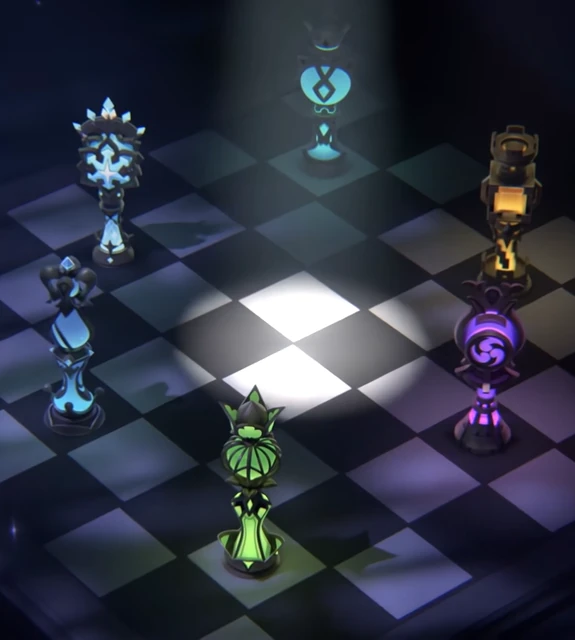

Teyvat & Unknown · Relics & Equipment
The Gnoses
The seven Gnoses are chess-piece-like tokens of the Archon thrones, crafted from the Third Descender’s remains; six are with the Tsaritsa, while the Pyro Gnosis remains missing as of Version 7.2.

Seven Tokens of the Archon Thrones
There are seven Gnoses, one for each element and Archon throne. The game describes them as chess pieces and tokens of Celestial authority. They mark an Archon’s formal place in the Seven, but they are not the source of every elemental ability an Archon possesses: Venti, Zhongli, and Nahida retain their powers after their Gnoses leave their hands.
A Gnosis can amplify its bearer, and the Tsaritsa says its power may let a god exceed the limits of their authority. The exact effects differ across the story; the game does not confirm the older claims that each Gnosis provides continent-wide control or that all the pieces have specific chess roles.
What the Game Reveals About Their Origin
In the Fontaine Archon Quest, Skirk says the Gnoses were crafted from the remains of the Third Descender, an outsider who was killed by the Heavenly Principles. In Chapter VII, the Tsaritsa adds that the Gnoses come from outside Teyvat’s system and that a Gnosis responds to a seal left by the Third Descender.
Rhinedottir gives another account in which the Descender agreed to have his remains divided into seven pieces, but she calls it a story. The game does not name this Descender in that exchange or fully confirm the circumstances of the agreement. It also does not establish that the Gnoses contain all seven Dragon Sovereigns’ authorities.
How the Fatui Collected Them
The Fatui acquired Gnoses through different events, not one uniform transfer. Signora took Venti’s by force; Zhongli arranged to hand over his as part of a contract; Yae Miko exchanged Ei’s Gnosis with Scaramouche to save the Traveler, after which Nahida recovered it and gave it to Dottore; Nahida traded the Dendro Gnosis to Dottore for information; and Neuvillette gave the Hydro Gnosis to Arlecchino after Focalors’s plan restored his Hydro authority.
These events do not mean every Archon endorsed the Tsaritsa’s project. The circumstances range from theft to private bargains and emergency exchanges.
The Missing Pyro Gnosis
As of Version 7.2, the Tsaritsa holds six Gnoses, including her own Cryo Gnosis, while the Pyro Gnosis remains unlocated. Mavuika had made it available for Nahida’s Irminsul-burning operation, after which it disappeared. The Traveler reports that Mavuika believes it returned to the Ley Lines, but neither she nor the Fatui can currently locate or sense it.
Earlier summaries that say the Fatui have all seven are out of date. No current holder of the Pyro Gnosis is confirmed.
The Tsaritsa’s Aim and the Unanswered Mechanism
The Tsaritsa says the Gnoses can amplify their bearer and that they are the only things that respond to the Third Descender’s sealed legacy. Pierro calls them a bargaining chip and says the broader goal is to challenge the Heavenly Principles and reconstruct the world, but he does not explain how the set will accomplish this.
The story has not revealed what lies behind the seal, what all seven Gnoses would do together, or what the Tsaritsa would ultimately build. Those questions remain open; the idea that the collection will necessarily destroy Celestia or restore all Dragon Sovereigns’ authority goes beyond what the game has confirmed.
This is an original CoreGG reading guide, not an official HoYoverse article or a reproduction of the game text. Source links below identify the records used so you can check the original context.
Sources & references
Check these sources for the original game text and reference trail.